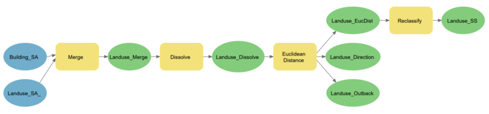
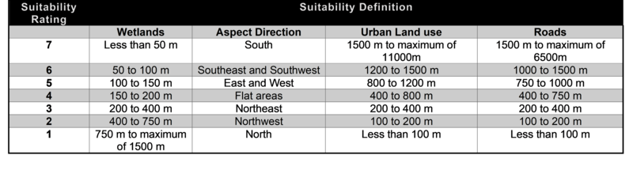
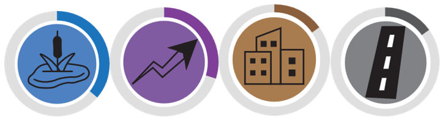

Methodology.
For Remote Sensing data, we have created a Postgres database and along with is a metadata table which contains details regarding the collected imageries in the database like, Satellite name, date, source and whether the image is orthorectified or not. We have documented a general Habitat suitability analysis workflow of one of the property named Barnum Creeek Nature Reserve owned by Haliburton county. At the end we have created some good quality and appealing maps from the results to show outputs of Spatial Analysis workflows. Apart from this there is guide made to refer how different remote sensing softwares can used for different analysis. In addition, we have integrated the Feature Manipulation Engine workflows for ETL (Extract Transfer Load) process
Multicriteria Habitat Suitability Analysis
This method was chosen to fulfill the Spatial Analysis aspect of the collaborative project or academic objective three. This would help HHLT find land that
should be conserved as the habitat within which the particular species of interest (flora or fauna) can be determined. In addition, this method also allows the client to
change the weightage which implies that the importance of each layer with reference to the other layers can be changed. To accomplish this, QGIS, an open-source software
and ArcGIS Pro was used. Both of these doftware have cimilar functionality and tools therefore the same methods can be used when using either software.

 These are the tools that were used:
1. Clip tool: To get all the layers to have the same extent
2. Euclidean distance or Raster distance: This step is considered for the waterbodies, and land use layers as this tool allows for the conversion of these layers to raster while considering the criteria selected (ArcGIS Pro).
In this step, the maximum distance from waterbodies or land use can be set and changed according to the species.
This tool can also be used for roads instead of the kernel density tool if there aren’t many roads in the area.
3. Kernel density: This tool was used to determine the number of roads within a certian area. The larger the network in an area, the larger the human habitation within the area.
4. Feature to Raster: Any vector layer such as the soil layer was converted to a raster layer to enable the reclassification of this.
5. Slope: This was determined using a DEM (Digital Elevation Model) of Southern Ontario that was found on Ontario GeoHub. The slope was determined in degrees.
This layer was then used to determine Aspect or the direction of slope as it is useful to find the location of plants. Depending on the direction of the slope, the plants in an area might recieve lots of sunlight or very little.
6. Reclassify: This tool was used on the raster layers to segregate the attributes within the layer by weighing criteria according to it's importance. A suitable criteria would get a lower weight.
7. Weighted Sum: Finally, this tool weighted or was used to give more importance to some layers when compared to others.
The percentage weights can be changed for any future analysis conducted by the client.
These are the tools that were used:
1. Clip tool: To get all the layers to have the same extent
2. Euclidean distance or Raster distance: This step is considered for the waterbodies, and land use layers as this tool allows for the conversion of these layers to raster while considering the criteria selected (ArcGIS Pro).
In this step, the maximum distance from waterbodies or land use can be set and changed according to the species.
This tool can also be used for roads instead of the kernel density tool if there aren’t many roads in the area.
3. Kernel density: This tool was used to determine the number of roads within a certian area. The larger the network in an area, the larger the human habitation within the area.
4. Feature to Raster: Any vector layer such as the soil layer was converted to a raster layer to enable the reclassification of this.
5. Slope: This was determined using a DEM (Digital Elevation Model) of Southern Ontario that was found on Ontario GeoHub. The slope was determined in degrees.
This layer was then used to determine Aspect or the direction of slope as it is useful to find the location of plants. Depending on the direction of the slope, the plants in an area might recieve lots of sunlight or very little.
6. Reclassify: This tool was used on the raster layers to segregate the attributes within the layer by weighing criteria according to it's importance. A suitable criteria would get a lower weight.
7. Weighted Sum: Finally, this tool weighted or was used to give more importance to some layers when compared to others.
The percentage weights can be changed for any future analysis conducted by the client.
Northern Bog Aster Habitat Suitability Analysis.
The study area selected for this analysis was an area that surrounded and included Queen Elizabeth II Wildlands Provincial Park which is partly within Haliburton County. 3 criterias were selected to perform the analysis; wetland areas, aspect or direction of the ground surface and the urban development in the area which is divided into sections, one is urban landuse (this includes industrial, residential, cemetery, retail, and quarry areas) and other is Roads infrastructure. Wetlands being the most dominant for this plant's growth was given the weightage of 40% and other two were given 30% each. Therefore, 15% each divided amoungst two categories of urban development.
Each suitability surface for each criteria were obtained using the various geoprocessing tools of ArcGIS Pro like merge, buffer, dissolve, euclidean distance and reclassify. The workflow for one such urban lanuse criteria in model builder is shown in figure below. Then Weighted Overlay tool was used at last to specify weightage to all criterias and finally obtain the habitat suitability surface.
Suitability definition for suitability ratings from 1 to 7 where 7 is assigned the most suitable value and 1 being the least suitable for plant growth is shown in figure below.
Workflow Automation.
Model Builder
The client requested us to make use of model builder to showcase the steps used for the spatial analysis technique. To do this, a new model was first created within the toolbox in ArcGIS Pro. Next, the required geoprocessing tools are dragged and dropped into the model. Relavent input files are dragged into the model and inserted into the geoprocessing tools. Then, changes were made to the tools and it was run. There were six main models that were created for this project as a larger model was harder to run and caused many issues. The models created were: Waterbodies, roads, elevation, human habitation, soil, weightage and methodology. The methodology model contains all of the steps required for this analysis.
Visualization
To create a map poster of size 34x44 inches in landscape orientation, layout was prepared to position the map elements. Then facts and basic information was found out for Rush aster plant. A local scene map in ArcGIS Pro was created to show all 4 criteria’s suitability surfaces in 3D view giving 10x vertical exaggeration as there is not much of the difference in elevation in the study area.To create an interactive element, icon drawings of all 4 criteria were done in Adobe Illustrator as shown in figure here. Lastly, charts and threaded table was created to show analysis results and summarize the information.
